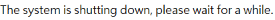
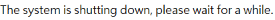

from nas_info import *
from library import *
Settings.OcrTextSearch = True
Settings.OcrTextRead = True
import sys
nas_name = sys.argv[1]
nas_lanip1 = sys.argv[2]
nas_ac = sys.argv[3]
nas_pwd = sys.argv[4]
"""
nas_name = "Jack-TS932X"
nas_lanip1 = "10.20.240.109"
nas_ac = "admin"
nas_pwd = "jack2030"
"""
target = nas_detail(name = nas_name, lanip1 = nas_lanip1, ac = nas_ac, pwd = nas_pwd)
print("Target is: " + target["name"])
def qfinder_shutdown():
fun_name = sys._getframe().f_code.co_name
print("*** Start to " + fun_name + " ***")
# open qfinder
open_qfinder()
# find target NAS
find_target_nas(name = target["name"], lanip1 = target["lanip1"])
wait(2)
doubleClick()
print("click tools option")
wait(1)
for i in range(4):
type(Key.DOWN)
wait(1)
type(Key.ENTER)
print("execute shutdown")
wait(20)
if exists( ):
print("open login window")
else:
print("open login window FAIL")
type(target["ac"])
wait(1)
type(Key.TAB)
wait(1)
type(target["pwd"])
wait(1)
type(Key.ENTER)
wait(5)
print("input ac & pwd")
wait(3)
if exists():
print("start to shutdown")
flag = "True"
msg_region = Region(Region(481,270,320,138))
msg_region.click()
print("close shutdown dia")
else:
print("Fail to start shutdown")
flag = "False"
with open("result.txt", "w") as fp:
fp.write(flag)
print("--- End " + fun_name + " ---")
if __name__ == "__main__":
qfinder_shutdown()
):
print("open login window")
else:
print("open login window FAIL")
type(target["ac"])
wait(1)
type(Key.TAB)
wait(1)
type(target["pwd"])
wait(1)
type(Key.ENTER)
wait(5)
print("input ac & pwd")
wait(3)
if exists():
print("start to shutdown")
flag = "True"
msg_region = Region(Region(481,270,320,138))
msg_region.click()
print("close shutdown dia")
else:
print("Fail to start shutdown")
flag = "False"
with open("result.txt", "w") as fp:
fp.write(flag)
print("--- End " + fun_name + " ---")
if __name__ == "__main__":
qfinder_shutdown()